# Example data
scores <- c(72, 81, 76, 88, 91, 84, 77, 95, 82, 84)
scores [1] 72 81 76 88 91 84 77 95 82 84Class date: Sep 16, 2026
Based in part on lecture notes by Prof. Byoungkwan Lee and 이병관 (2023). 사회과학 연구자를 위한 R을 활용한 기초 통계. 한양대학교출판부.
Descriptive statistics are methods for organizing, summarizing, and presenting observed data.
We usually summarize data in three ways:
Descriptive statistics describe the data we observed.
They do not, by themselves, tell us whether a pattern generalizes to a larger population.
# Example data
scores <- c(72, 81, 76, 88, 91, 84, 77, 95, 82, 84)
scores [1] 72 81 76 88 91 84 77 95 82 84A quick summary can already tell us a great deal about the dataset.
summary(scores) Min. 1st Qu. Median Mean 3rd Qu. Max.
72 78 83 83 87 95 Before choosing a statistical summary, we should first ask:
What kind of variable am I working with?

Source: https://www.ijngp.com/post/measurement-scale-noir
A common classification is:
| Level | Main characteristic | Example |
|---|---|---|
| Nominal | Categories without order | Gender, media platform |
| Ordinal | Ordered categories | Satisfaction level |
| Interval | Equal intervals, no true zero | Temperature in °C |
| Ratio | Equal intervals and meaningful zero | Age, income, reaction time |
In practice, a simpler distinction is often useful:

Source: https://www.ijngp.com/post/measurement-scale-noir
A tabular summary of data showing the frequency (or number) of items in each of several nonoverlapping classes.
The objective is to provide insights about the data that cannot be quickly obtained by looking only at the original data.
Suppose 20 guests evaluate a hotel using five response categories.
satis <- c(
"Below Average", "Average", "Above Average",
"Above Average", "Above Average", "Above Average",
"Above Average", "Below Average", "Below Average",
"Average", "Poor", "Poor",
"Above Average", "Excellent", "Above Average",
"Average", "Above Average", "Average",
"Above Average", "Average"
)
satis <- factor(
satis,
levels = c("Poor", "Below Average", "Average",
"Above Average", "Excellent"),
ordered = TRUE
)table(satis)satis
Poor Below Average Average Above Average Excellent
2 3 5 9 1 Using dplyr, we can create a cleaner table.
library(tidyverse)
hotel <- tibble(rating = satis)
hotel %>%
count(rating)# A tibble: 5 × 2
rating n
<ord> <int>
1 Poor 2
2 Below Average 3
3 Average 5
4 Above Average 9
5 Excellent 1Using KableExtra, we can format the table for better presentation.
library(kableExtra)
hotel %>%
count(rating) %>%
kbl() %>%
kable_styling("hover")| rating | n |
|---|---|
| Poor | 2 |
| Below Average | 3 |
| Average | 5 |
| Above Average | 9 |
| Excellent | 1 |
hotel %>%
count(rating) %>%
kbl(col.names = c("Rating", "Frequency")) %>%
kable_styling("hover")| Rating | Frequency |
|---|---|
| Poor | 2 |
| Below Average | 3 |
| Average | 5 |
| Above Average | 9 |
| Excellent | 1 |
Guidelines for Selecting Number of Classes
Use between 5 and 20 classes.
Data sets with a larger number of elements usually require a larger number of classes.
Smaller data sets usually require fewer classes.
Guidelines for Selecting Width of Classes
\[ \text{Approximate Class Width} = \frac{\text{Largest Data Value} - \text{Smallest Data Value}} {\text{Number of Classes}} \]
The relative frequency of a class is the fraction or proportion of the total number of data items belonging to the class.
A relative frequency distribution is a tabular summary of a set of data showing the relative frequency for each class.
hotel %>%
count(rating) %>%
mutate(props = n / sum(n)) %>%
kbl() %>%
kable_styling("hover")| rating | n | props |
|---|---|---|
| Poor | 2 | 0.10 |
| Below Average | 3 | 0.15 |
| Average | 5 | 0.25 |
| Above Average | 9 | 0.45 |
| Excellent | 1 | 0.05 |
Relative frequencies are especially useful when comparing groups with different sample sizes.
Cumulative frequency distribution – shows the number of items with values less than or equal to the upper limit of each class.
Cumulative relative frequency distribution – shows the proportion of items with values less than or equal to the upper limit of each class.
hotel %>%
count(rating) %>%
mutate(props = n / sum(n),
percent = props * 100) %>%
kbl() %>%
kable_styling("hover")| rating | n | props | percent |
|---|---|---|---|
| Poor | 2 | 0.10 | 10 |
| Below Average | 3 | 0.15 | 15 |
| Average | 5 | 0.25 | 25 |
| Above Average | 9 | 0.45 | 45 |
| Excellent | 1 | 0.05 | 5 |
A bar graph is a graphical device for depicting qualitative data.
On the horizontal axis we specify the labels that are used for each of the classes.
A frequency, relative frequency, or percent frequency scale can be used for the vertical axis.
Using a bar of fixed width drawn above each class label, we extend the height appropriately.
The bars are separated to emphasize the fact that each class is a separate category.
barplot(table(hotel$rating))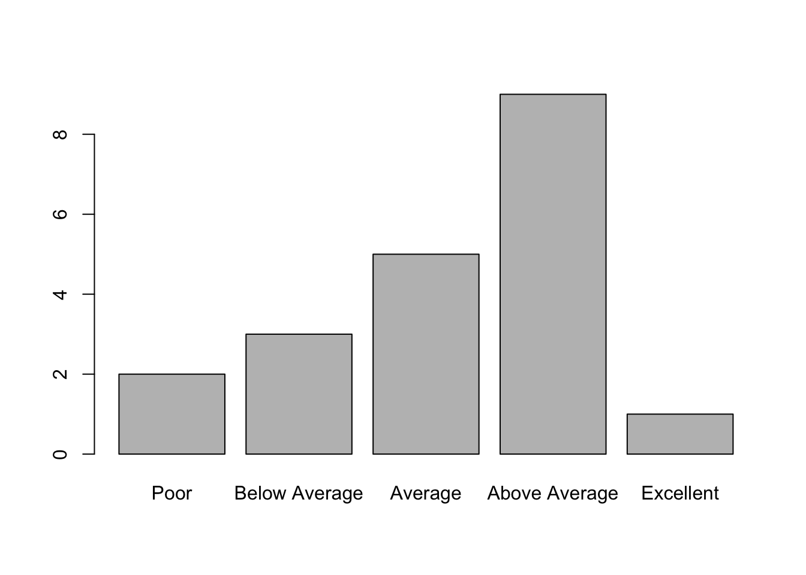
Using ggplot2, we can create a cleaner plot.
In ggplot2, we build a graph by adding layers with +.
library(ggplot2)
ggplot(hotel)
ggplot(hotel, aes(x=rating))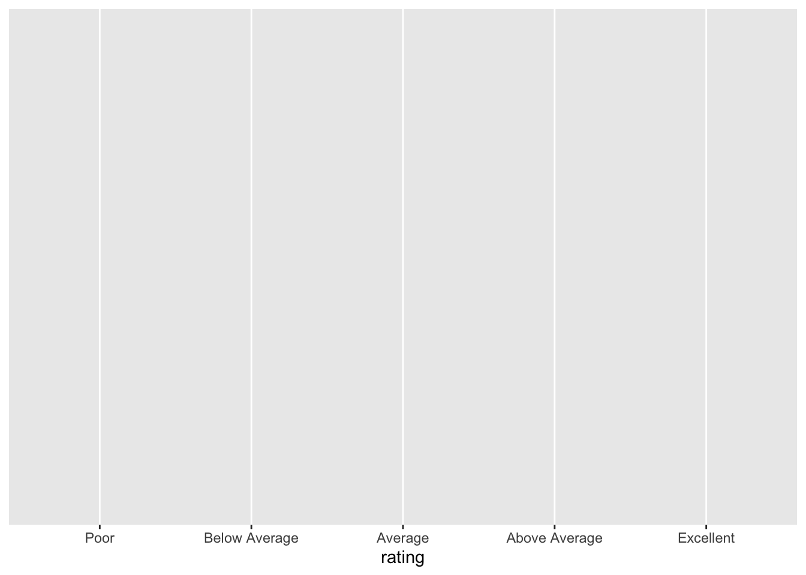
ggplot(hotel, aes(x=rating)) +
geom_bar()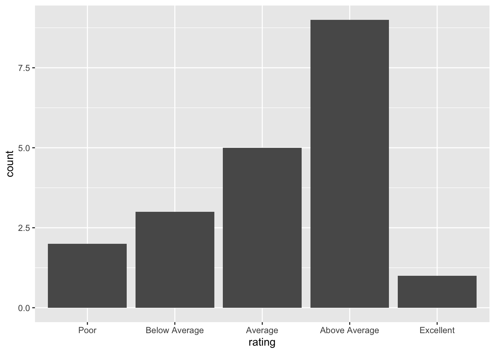
ggplot(hotel, aes(x=rating)) +
geom_bar(fill = "steelblue")ggplot(hotel, aes(x=rating)) +
geom_bar(fill = "steelblue", colour = "black")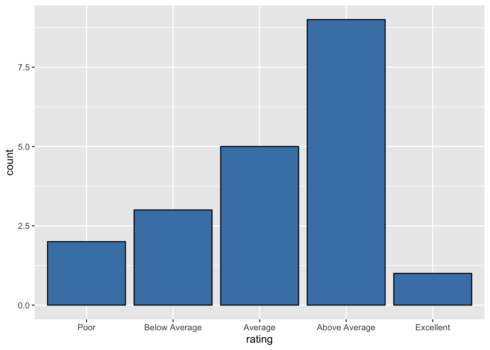
ggplot(hotel, aes(x=rating)) +
geom_bar(fill = "steelblue", colour = "black") +
labs(title = "Distribution of Hotel Ratings",
x = "Hotel Rating",
y = "Frequency")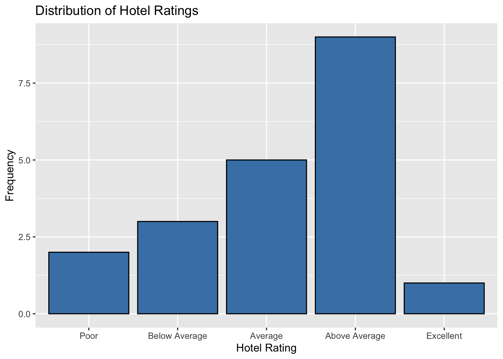
ggplot(hotel, aes(x=rating)) +
geom_bar(fill = "steelblue", colour = "black") +
labs(title = "Distribution of Hotel Ratings",
subtitle = "Customer satisfaction ratings from 20 hotel guests",
x = "Hotel Rating",
y = "Frequency")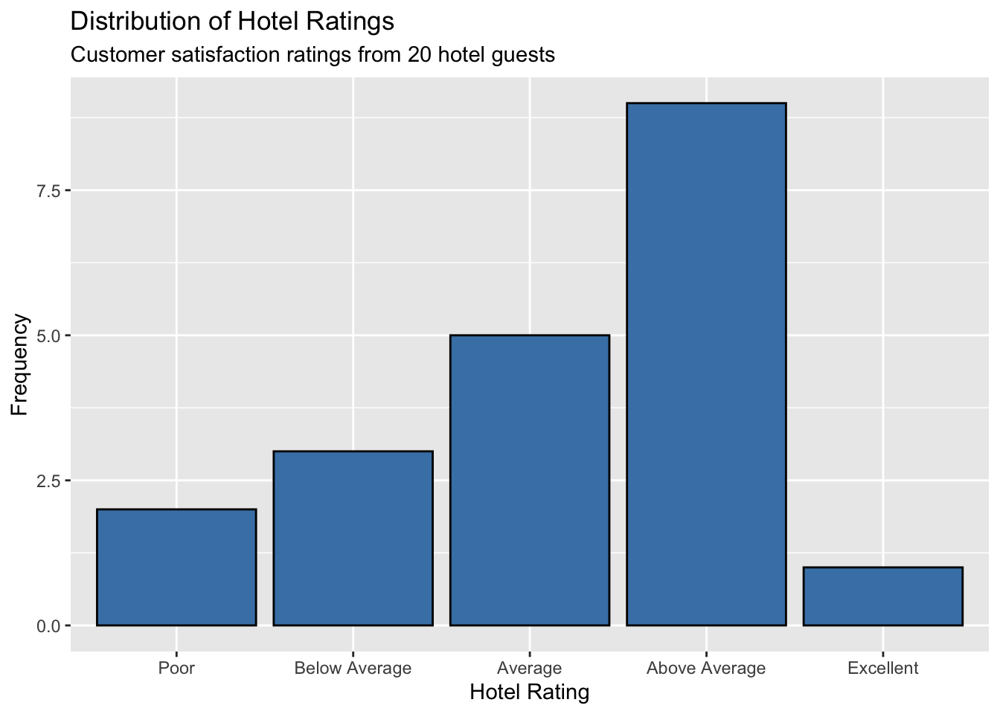
ggplot(hotel, aes(x=rating)) +
geom_bar(fill = "steelblue", colour = "black") +
labs(title = "Distribution of Hotel Ratings",
subtitle = "Customer satisfaction ratings from 20 hotel guests",
x = "Hotel Rating",
y = "Frequency") +
theme_minimal()The pie chart is a commonly used graphical device for presenting relative frequency distributions for qualitative data.
First draw a circle; then use the relative frequencies to subdivide the circle into sectors that correspond to the relative frequency for each class.
Since there are 360 degrees in a circle, a class with a relative frequency of .25 would consume .25(360) = 90 degrees of the circle.
pie(table(hotel$rating))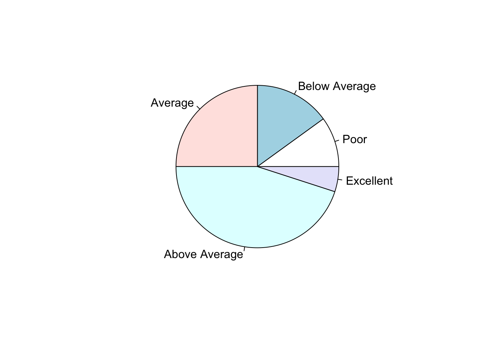
ggplot(hotel, aes(x = "", fill = rating)) +
geom_bar(color = "black", linewidth = 0.5) +
coord_polar(theta = "y") +
scale_fill_brewer(palette = "Blues") +
labs(title = "Distribution of Hotel Ratings",
fill = "Rating") +
theme_void()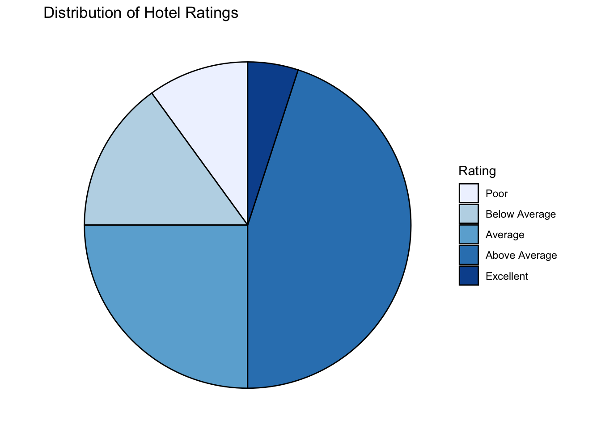
ggplot(hotel, aes(x = "", fill = rating)) +
geom_bar(color = "black", linewidth = 0.5) +
geom_text(
aes(label = gsub(" ", "\n", rating)),
stat = "count",
position = position_stack(vjust = 0.5),
color = "black",
fontface = "bold",
size = 4,
lineheight = 0.9
)+
coord_polar(theta = "y") +
scale_fill_brewer(palette = "Blues") +
labs(title = "Distribution of Hotel Ratings") +
theme_void() +
theme(legend.position = "none")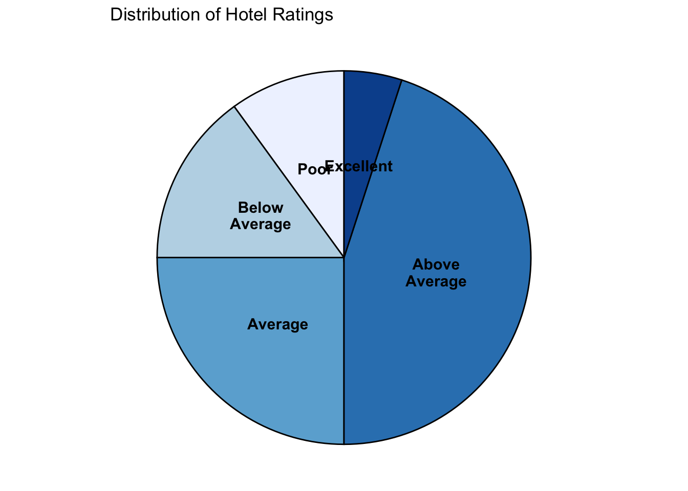
Another common graphical presentation of quantitative data is a histogram.
The variable of interest is placed on the horizontal axis.
A rectangle is drawn above each class interval with its height corresponding to the interval’s frequency, relative frequency, or percent frequency.
Unlike a bar graph, a histogram has no natural separation between rectangles of adjacent classes.
st <- as.data.frame(state.x77)
names(st)[1] "Population" "Income" "Illiteracy" "Life Exp" "Murder"
[6] "HS Grad" "Frost" "Area" st %>%
rename(Life.Exp = "Life Exp") %>%
ggplot(aes(x = Life.Exp)) +
geom_histogram(bins = 6,
fill = "cornflowerblue",
color = "black") +
labs(x = "Life Expectancy",
y = "Frequency",
title = "Distribution of Life Expectancy") +
theme_minimal()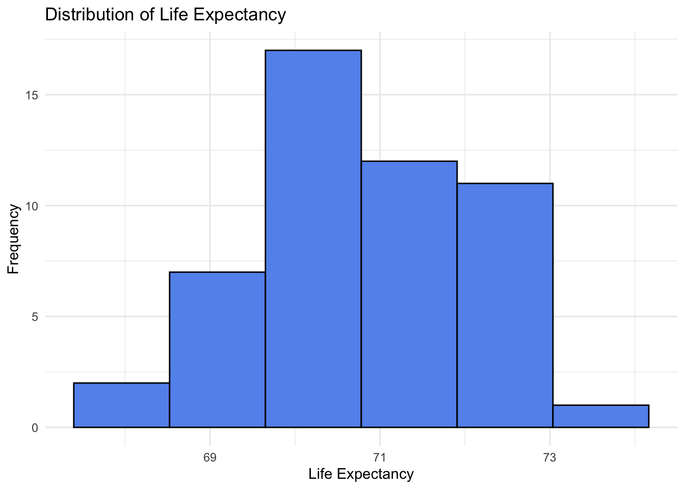
What is the difference between a bar graph and a histogram?
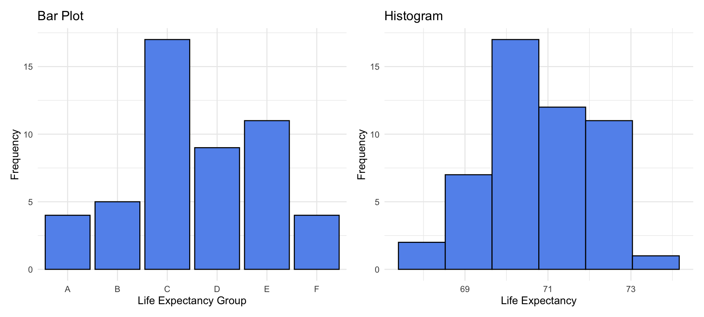
A bar plot is mainly used for categorical variables.
A histogram is used to display the distribution of a quantitative variable.
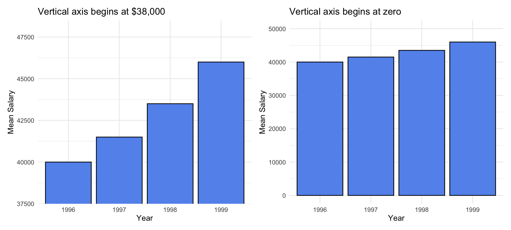
The two graphs display the same data, but the truncated y-axis makes the increase appear much larger.
For bar charts, changing the baseline can substantially change the visual impression of the differences.
When reading a histogram, examine:
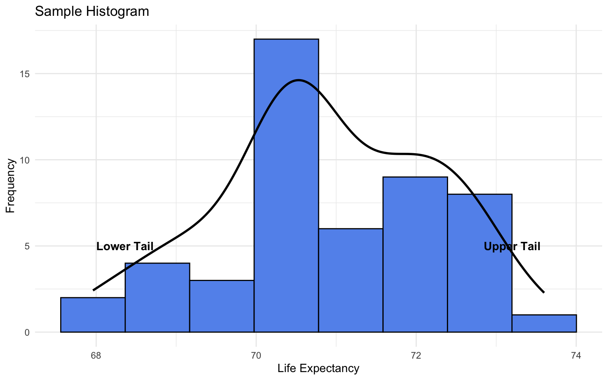
A distribution is symmetric when its left and right sides are approximately balanced.
A distribution is right-skewed when the long tail extends toward larger values.
A distribution is left-skewed when the long tail extends toward smaller values.
set.seed(123)
symmetric_data <- rnorm(1000)
right_skewed_data <- rexp(1000)
tibble(value = symmetric_data) |>
ggplot(aes(x = value)) +
geom_histogram(bins = 30) +
labs(title = "Approximately Symmetric Distribution") +
theme_minimal()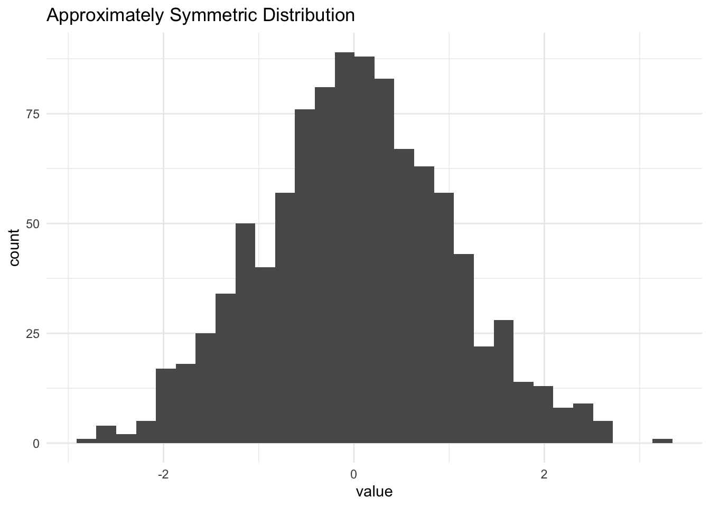
tibble(value = right_skewed_data) |>
ggplot(aes(x = value)) +
geom_histogram(bins = 30) +
labs(title = "Right-Skewed Distribution") +
theme_minimal()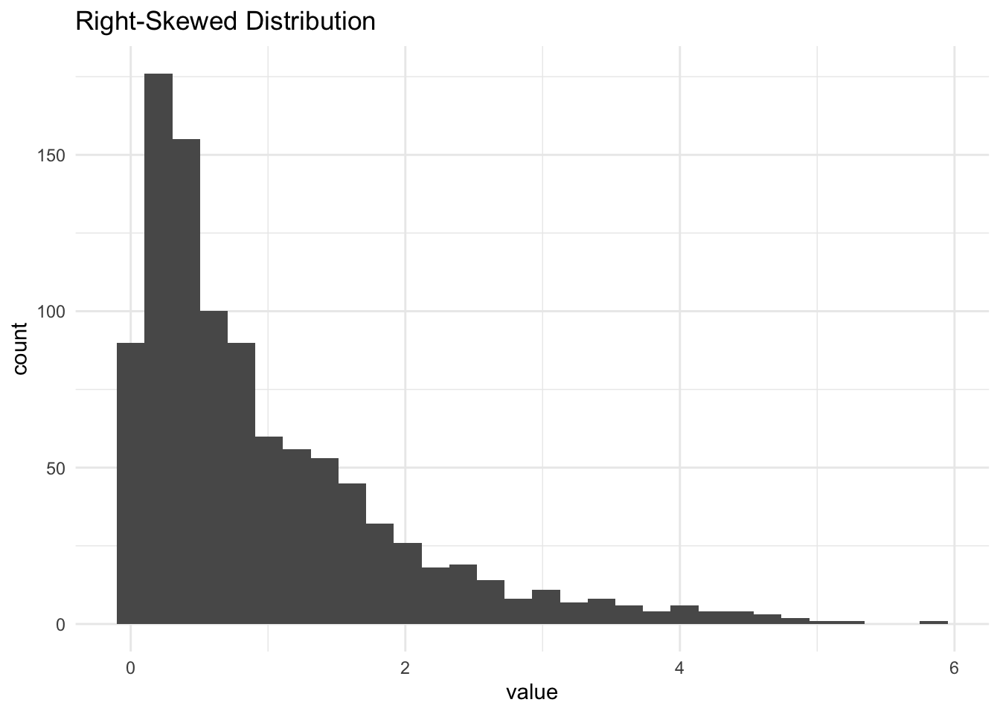
The moments package provides convenient functions.
# install.packages("moments") # Run once if needed
library(moments)
cost <- c(
91, 78, 93, 57, 75, 52, 99, 80, 97, 62,
71, 69, 72, 89, 66, 75, 79, 75, 72, 76,
104, 74, 62, 68, 97, 105, 77, 65, 80, 109,
85, 97, 88, 68, 83, 68, 71, 69, 67, 74,
62, 82, 98, 101, 79, 105, 79, 69, 62, 73
)
skewness(cost)[1] 0.4652214kurtosis(cost)[1] 2.344017Skewness and kurtosis should not be interpreted using a single universal cutoff.
Their practical importance depends on sample size, the statistical model, and the purpose of the analysis.
Visual inspection of the distribution should accompany numerical summaries.
A box plot summarizes a quantitative variable using its location and spread.
Important components include:
[ IQR = Q_3 - Q_1 ]
quantile(cost) 0% 25% 50% 75% 100%
52.00 69.00 75.50 88.75 109.00 IQR(cost)[1] 19.75tibble(cost = cost) |>
ggplot(aes(y = cost)) +
geom_boxplot() +
labs(
y = "Parts Cost",
title = "Box Plot of Parts Costs"
) +
theme_minimal()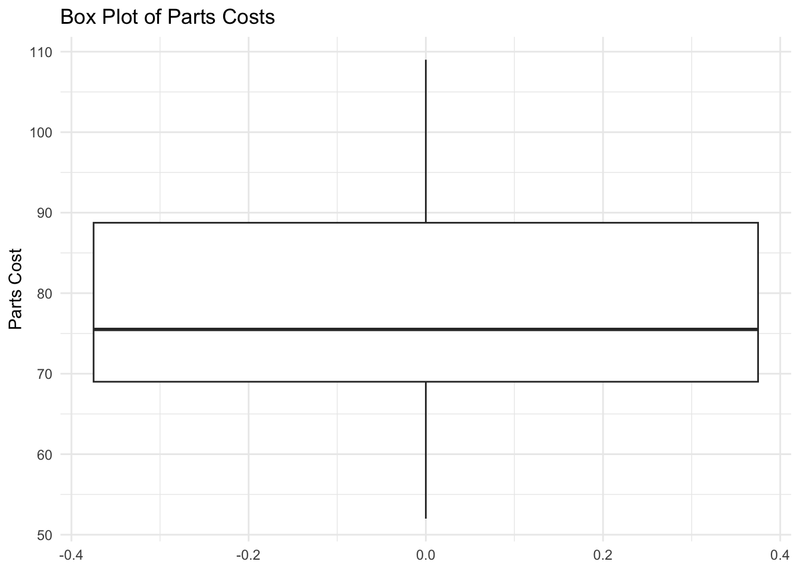
A commonly used rule identifies observations outside:
[ Q_1 - 1.5(IQR) ]
and
[ Q_3 + 1.5(IQR) ]
as potential outliers.
q1 <- quantile(cost, 0.25)
q3 <- quantile(cost, 0.75)
iqr <- IQR(cost)
lower_bound <- q1 - 1.5 * iqr
upper_bound <- q3 + 1.5 * iqr
lower_bound 25%
39.375 upper_bound 75%
118.375 cost[cost < lower_bound | cost > upper_bound]numeric(0)An observation flagged by the 1.5 × IQR rule should not automatically be deleted.
It may reflect a data-entry error, a rare but valid observation, or an important feature of the population.
The three common measures of central tendency are:
For a sample,
[ {x} = _{i=1}^{n}x_i ]
mean(cost)[1] 78.98The mean uses every observation, so it can be sensitive to extreme values.
The median divides the ordered observations into two halves.
median(cost)[1] 75.5The median is less sensitive to extreme observations than the mean.
Base R does not provide a direct statistical-mode function, but we can obtain it from a frequency table.
get_mode <- function(x) {
frequency <- table(x)
names(frequency)[frequency == max(frequency)]
}
get_mode(hotel)[1] "Above Average"The relationship between the mean and median often provides information about the shape of a distribution.
For a roughly symmetric distribution:
[ Mean Median ]
For a strongly right-skewed distribution, large observations tend to pull the mean upward.
income <- c(30, 32, 35, 36, 38, 40, 41, 42, 45, 150)
mean(income)[1] 48.9median(income)[1] 39Here, one very large value has a much stronger effect on the mean than on the median.
Measures of central tendency tell us where a distribution is located.
Measures of variation tell us how dispersed the observations are.
Common measures include:
[ Range = Maximum - Minimum ]
max(cost) - min(cost)[1] 57range(cost)[1] 52 109For a sample,
[ s^2 = ]
var(cost)[1] 195.7751The standard deviation is the square root of the variance.
[ s = ]
sd(cost)[1] 13.99197Because the standard deviation is expressed in the same unit as the original variable, it is usually easier to interpret than variance.
R provides several ways to obtain descriptive statistics quickly.
summary(cost) Min. 1st Qu. Median Mean 3rd Qu. Max.
52.00 69.00 75.50 78.98 88.75 109.00 mean(cost)[1] 78.98median(cost)[1] 75.5sd(cost)[1] 13.99197var(cost)[1] 195.7751IQR(cost)[1] 19.75range(cost)[1] 52 109dplyrtibble(cost = cost) |>
summarise(
n = n(),
mean = mean(cost),
median = median(cost),
sd = sd(cost),
variance = var(cost),
min = min(cost),
max = max(cost),
iqr = IQR(cost)
)# A tibble: 1 × 8
n mean median sd variance min max iqr
<int> <dbl> <dbl> <dbl> <dbl> <dbl> <dbl> <dbl>
1 50 79.0 75.5 14.0 196. 52 109 19.8One of the most common tasks in social-science data analysis is to compare descriptive statistics across groups.
set.seed(123)
survey <- tibble(
condition = rep(c("Control", "Treatment"), each = 50),
outcome = c(
rnorm(50, mean = 5.0, sd = 1.2),
rnorm(50, mean = 5.6, sd = 1.1)
)
)
survey |>
group_by(condition) |>
summarise(
n = n(),
mean = mean(outcome),
sd = sd(outcome),
median = median(outcome)
)# A tibble: 2 × 5
condition n mean sd median
<chr> <int> <dbl> <dbl> <dbl>
1 Control 50 5.04 1.11 4.91
2 Treatment 50 5.76 0.996 5.77This type of summary is often the first step before conducting inferential analyses such as a t-test or ANOVA.
For an approximately normal distribution:
Suppose IQ scores have:
[ = 100, = 16 ]
Then approximately 68% of scores are expected to fall between:
mean_iq <- 100
sd_iq <- 16
c(
lower = mean_iq - sd_iq,
upper = mean_iq + sd_iq
)lower upper
84 116 Approximately 95% fall between:
c(
lower = mean_iq - 2 * sd_iq,
upper = mean_iq + 2 * sd_iq
)lower upper
68 132 The 68–95–99.7 rule is an approximation that applies when the distribution is approximately normal.
A good descriptive analysis usually combines numerical summaries and visualization.
survey |>
group_by(condition) |>
summarise(
n = n(),
mean = mean(outcome),
sd = sd(outcome),
median = median(outcome),
iqr = IQR(outcome)
)# A tibble: 2 × 6
condition n mean sd median iqr
<chr> <int> <dbl> <dbl> <dbl> <dbl>
1 Control 50 5.04 1.11 4.91 1.51
2 Treatment 50 5.76 0.996 5.77 1.09survey |>
ggplot(aes(x = condition, y = outcome)) +
geom_boxplot() +
labs(
x = "Condition",
y = "Outcome",
title = "Outcome by Experimental Condition"
) +
theme_minimal()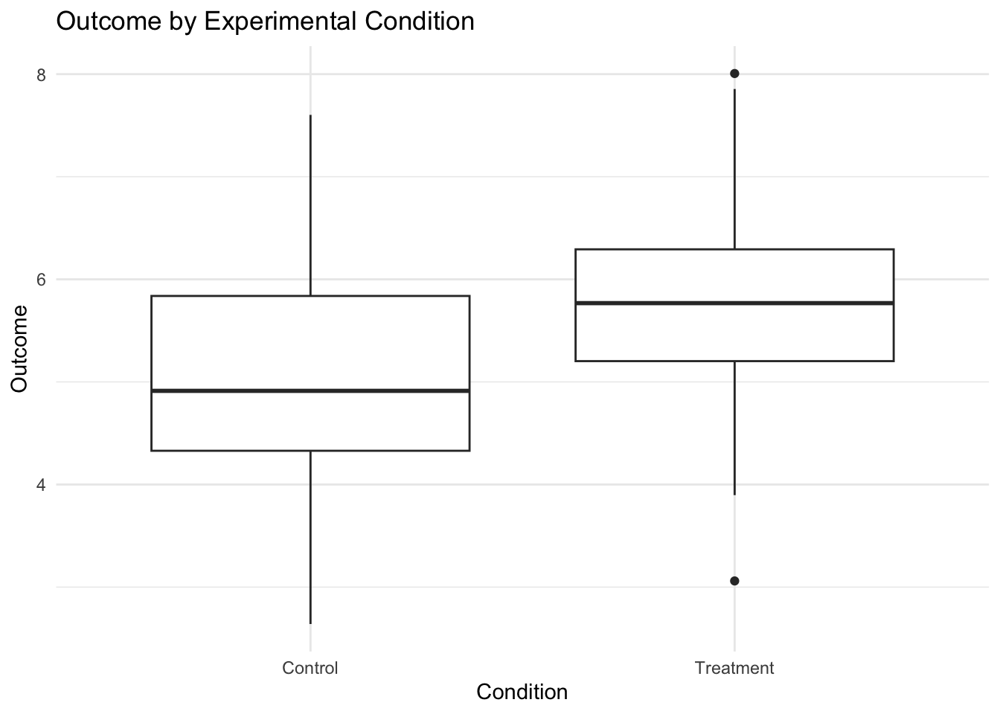
The table tells us how much the groups differ.
The plot helps us see how the observations are distributed, including spread, asymmetry, and possible outliers.
Use the following data:
practice <- c(12, 15, 15, 16, 18, 19, 20, 21, 22, 35)Calculate:
Then create:
Finally, answer:
Does the value 35 affect the mean and median equally?
Use mtcars and examine the variable mpg.
head(mtcars) mpg cyl disp hp drat wt qsec vs am gear carb
Mazda RX4 21.0 6 160 110 3.90 2.620 16.46 0 1 4 4
Mazda RX4 Wag 21.0 6 160 110 3.90 2.875 17.02 0 1 4 4
Datsun 710 22.8 4 108 93 3.85 2.320 18.61 1 1 4 1
Hornet 4 Drive 21.4 6 258 110 3.08 3.215 19.44 1 0 3 1
Hornet Sportabout 18.7 8 360 175 3.15 3.440 17.02 0 0 3 2
Valiant 18.1 6 225 105 2.76 3.460 20.22 1 0 3 1mpg.For a quantitative variable, observations can be grouped into numerical intervals.
Consider the following parts-cost data.
cost <- c(
91, 78, 93, 57, 75, 52, 99, 80, 97, 62,
71, 69, 72, 89, 66, 75, 79, 75, 72, 76,
104, 74, 62, 68, 97, 105, 77, 65, 80, 109,
85, 97, 88, 68, 83, 68, 71, 69, 67, 74,
62, 82, 98, 101, 79, 105, 79, 69, 62, 73
)We can group the data into intervals.
cost_group <- cut(
cost,
breaks = seq(50, 110, by = 10),
right = FALSE
)
table(cost_group)cost_group
[50,60) [60,70) [70,80) [80,90) [90,100) [100,110)
2 13 16 7 7 5